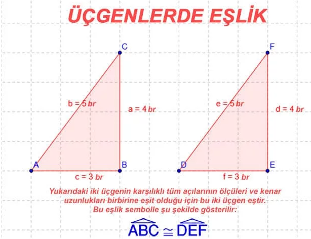
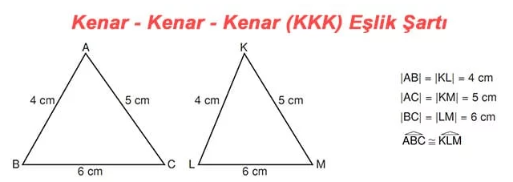
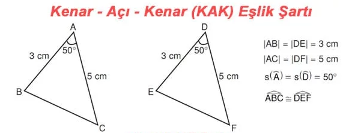
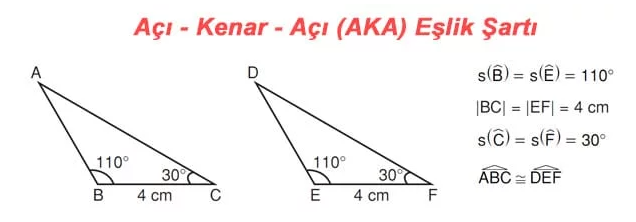
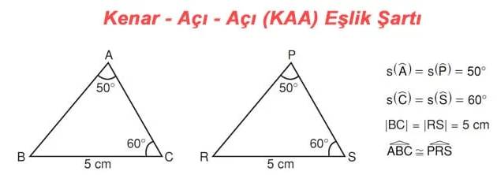

ÜÇGENLERDE EŞLİK
# İki üçgenin karşılıklı kenarının uzunlukları ve açılarının ölçüleri birbirine eşit ise bu üçgenler eş üçgenlerdir.
# İki üçgenin eşliği “≅” sembolü ile gösterilir. Sembolle gösterirken eş olan açılar aynı sırada yazılmalıdır.

ÜÇGENLERDE EŞLİK ŞARTLARI
İki üçgenin karşılıklı tüm kenarlarının uzunlukları ve tüm açılarının ölçüleri eşitse bu iki üçgen eştir. Ancak iki üçgenin tüm kenarları ve tüm açıları her zaman verilmeyebilir. Böyle durumlarda bu kısıtlı verilere bakarak da biz iki üçgenin eş olup olmadığına kanaat getirebiliriz. Bunun için aşağıdaki eşlik şartlarını kullanırız. Eğer iki üçgen arasında bu şartlardan biri sağlanıyorsa bu iki üçgen eştir diyebiliriz.
1) Kenar – Kenar – Kenar Eşlik Şartı (KKK)I
# İki üçgen arasında birebir eşleme yapıldığında karşılıklı tüm kenar uzunlukları eşit ise bu üçgenler eş üçgenlerdir. Buna; Kenar – Kenar – Kenar (KKK) eşlik şartı denir.
ÖRNEK:
Aşağıdaki iki üçgen Kenar-Kenar-Kenar eşlik şartına göre eştir.

# İki üçgen arasında birebir eşleme yapıldığında ikişer kenar uzunlukları ve bu iki kenar arasında kalan açılarının ölçüleri eşit ise bu üçgenler eş üçgenlerdir. Buna; Kenar – Açı – Kenar (KAK) eşlik şartı denir.
ÖRNEK:
Aş
2) Kenar – Açı – Kenar Eşlik Şartı (KAK)
ağıdaki iki üçgen Kenar-Açı-Kenar eşlik şartına göre eştir.

3) Açı – Kenar – Açı Eşlik Şartı (AKA)
# İki üçgen arasında birebir eşleme yapıldığında ikişer açılarının ölçüleri ve bu iki açı arasında kalan kenar uzunlukları eşit ise bu üçgenler eş üçgenlerdir. Buna; Açı – Kenar – Açı (AKA) eşlik şartı denir.
ÖRNEK:
Aşağıdaki iki üçgen Açı-Kenar-Açı eşlik şartına göre eştir.

4) Kenar – Açı – Açı Eşlik Şartı (KAA)
# İki üçgen arasında birebir eşleme yapıldığında ikişer açılarının ölçüleri ve bu açılardan herhangi birinin karşısındaki kenarın uzunlukları eşit ise bu üçgenler eş üçgenlerdir. Buna; Kenar – Açı – Açı (KAA) eşlik şartı denir.
ÖRNEK:
Aşağıdaki iki üçgen Kenar-Açı-Açı eşlik şartına göre eştir.
